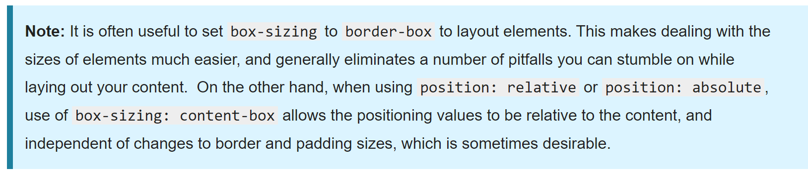

如下，MDN文档中提到，当使用绝对、相对位置时，
content-box允许内容和content对其，使其不受border
和padding的影响，因此我想对此进行实验。

position:relative
可以看到，在内部position:relative的情况下，
无论是border-box，content-box，内容都和content盒子对齐，
在盒子内部的位置会受到padding和border影响,所以我认为MDN
文档想表达的是，content-box的content部分不会因为border或
padding被压缩，因此无论border、padding如何变化，都可以保证
内容的正常显示，在实例中可以看到，倒数第二个样例，当我们变化
border和padding时，内部content已经被压缩到无法正常显示。
接下来看看绝对位置，position:absolute;top:0;left:0
可以看到，当采用绝对位置，content-box和border-box
内部都会和border内边框对齐，不会考虑padding，因此个人认为
在内部使用absolute布局时，不建议使用padding，因为没有意义。
对于content-box可以直接通过更改盒子大小，对于border-box设置
padding也没有作用，因此不设置padding可以增加可读性。